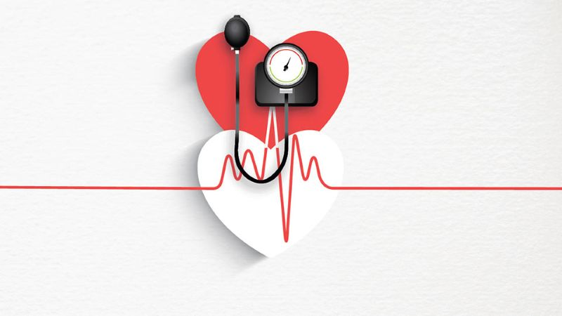

Pencegahan Hipertensi

Hipertensi atau tekanan darah tinggi merupakan kondisi yang dapat membahayakan kesehatan. Berikut adalah beberapa langkah yang dapat Anda ambil untuk mencegah hipertensi:
- Maintain pola makan sehat dengan mengurangi konsumsi garam dan meningkatkan asupan kalium.
- Lakukan olahraga secara teratur, termasuk aerobik dan latihan kekuatan.
- Pertahankan berat badan yang sehat sesuai dengan indeks massa tubuh (BMI).
- Batasi konsumsi alkohol dan hindari merokok.
- Kelola stres melalui aktivitas santai seperti meditasi dan yoga.
- Pantau tekanan darah secara teratur dan konsultasikan dengan profesional kesehatan.
Mengadopsi gaya hidup sehat dapat membantu mencegah hipertensi dan meningkatkan kesehatan jantung secara keseluruhan.